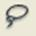
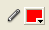

2.3 Toolbox
Panel yang sering digunakan di flash adalah panel color window untuk pengatur warna pada obyek – obyek yang digambarkan di stage. Pada flash 8 untuk mengeluarkan panel color bisa dilakukan dengan cara klik pada fill color kemudian pilih warna yang diinginkan.
|
Tool |
Nama |
Fungsi |
|
Arrow tool |
- Memilih suatu obyek - Memindahkan suatu obyek |
|
|
Subselection tool |
Merubah suatu obyek dengan edit point |
|
|
Free transform tool |
Merubah ukuran obyek, memutar obyek |
|
|
Line tool |
Membuat garis di stage |
|
|  |
Lasso tool |
Memilih daerah di obyek yang akan diedit |
|
Pen tool |
Menggambar dan merubah bentuk suatu obyek dengan menggunakan edit point |
|
|
Text tool |
Menulis di stage |
|
|
Oval tool |
Menggambar lingkaran |
|
|
Rectangle tool |
Menggambar segi empat |
|
|
Pencil tool |
Menggambar sebuah obyek sesuai keinginan |
|
|
Brush tool |
Memberi warna pada obyek bebas |
|
|
Ink bootle tool |
Mengisi warna pada obyek yang bordernya telah hilang |
|
|
Paint bucket tool |
Mengisi warna pada obyek yang dipilih |
|
|
Eyedropper tool |
Memilih sampel warna untuk dikenakan pada obyek lain |
|
|
Eraser tool |
Menghapus obyek di stage |
|
|
Hand tool |
Menggerakkan tampilan obyek pada stage tanpa merubah posisi obyek tersebut di stage |
|
|
Zoom tool |
Memperbesar tampilan obyek pada stage |
|
|  |
Stroke color |
Member warna pada garis/border obyek |
|
Fill color |
Memberi warna obyek |
|
|
Black & white |
Memberi warna obyek dan warna border/garis dengan warna hitam dan putih |
|
|
Swap color |
Menukar warna obyek dengan warna garis/border |